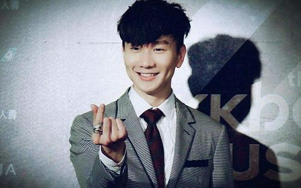

林俊杰
林俊杰英文名:JJ Lin,1981年3月27日出生于新加坡，祖籍中国福建省厦门市同安区华语流行乐男歌手、作曲人、音乐制作人、潮牌主理人。
重要事件
- 2003年发行首张创作专辑《乐行者》。
- 2004年凭借专辑《第二天堂》中的主打歌《江南》获得广泛关注。
- 2007年成立个人音乐制作公司JFJProductions。
- 2008年创立潮流品牌SMG。2014年凭借专辑《因你而在》夺得第25届台湾金曲奖最佳国语男歌手奖。
- 2016年凭借专辑《和自己对话》获得第27届台湾金曲奖最佳国语男歌手奖、最佳作曲人奖，并推出个人首部音乐纪录片《听·见林俊杰》同年获得国际汽车联盟（FIA）职业赛车执照。
- 2017年成立“SMG”电竞战队。
成就和荣誉
- 2012-07-05 ———MILK AWARDS年度艺人大赏 粉丝最爱男艺人
- 2012-07-05 ———MILK AWARDS年度艺人大赏 年度Milk先生
- 2012-07-05 ———MILK AWARDS年度艺人大赏 最佳潮牌主理人
- 2011-08-17 第02届壹周刊娱乐大赏 年度最受欢迎十大明星
- 2010-10-15 ———2009年度十大娱乐风格人物
- 2009-11-19 ———潮流盛典颁奖礼 年度潮牌掌柜
- 2017-01-01 ———新加坡《联合早报》2016年度风云人物
- 2015-02-25 ———娱乐乐翻天2014年度十大娱乐风格人物
- 2014-12-28 ———新加坡《早报·现在》2014年度人物
- 2014-11-24 第03届台湾《GQ》年度风格男人奖
- 2014-11-18 第05届通商中国青年奖
- 2013-10-06 第04届壹周刊娱乐大赏 最受欢迎十大明星
- 2012-08-15 第03届壹周刊娱乐大
- 2009-11-19 ———潮流盛典颁奖礼 年度潮流价值人物
- 2009-07-05 ———新加坡杰出青年
- 2008-10-26 第01届中国海西时尚娱乐盛典 时尚亚洲杰出艺人大奖
主要作品
| 年份 | 专辑名 |
|---|
| 2003 | 乐行者 |
| 2004 | 第二天堂 |
| 2005 | 编号89757 |
| 2006 | 曹操 |
| 2007 | 西界 |
| 2008 | JJ陆 |
| 2009 | 100天 |
| 2010 | 她说 |
| 2011 | 学不会 |
| 2013 | 因你而在 |
| 2014 | 新地球 |
生活照

生平
1981年3月27日，林俊杰出生于新加坡的一个音乐世家。虽然从4岁就开始学习古典钢琴，但严格来说他并非音乐科班，而是美术科班出身。小时候的林俊杰把哥哥当作偶像，跟随哥哥的步伐做任何事，直到接触流行音乐后，便爱上创作这一条路。
1999年，海蝶音乐在“非常歌手训练班”发现了他。这个腼腆害羞、并不起眼的高中生，却在自弹自唱的时候，展现了对音乐的纯真热忱。当时学习成绩优异的林俊杰，在已收到新加坡国立大学入学通知的情况下，放弃升学，与海蝶签下一纸合约，从此开启了他的音乐道路。
新加坡男性均须服兵役，林俊杰亦不例外。由于专长，他加入的是新加坡武装部队文工团。服兵役期间，他积累了大量的舞台表演经验，同时也尝试了无数创作。尽管早期屡遭“打枪”，但在老师的正确引导鼓励下，极具天赋又非常努力的他，终于谱出了令老师首肯的曲子，这便是2001年收录在张惠妹专辑里的《记得》。此后，林俊杰为庾澄庆、阿杜、王心凌等人创作多首主打歌曲，他的创作才华终于得以展示。